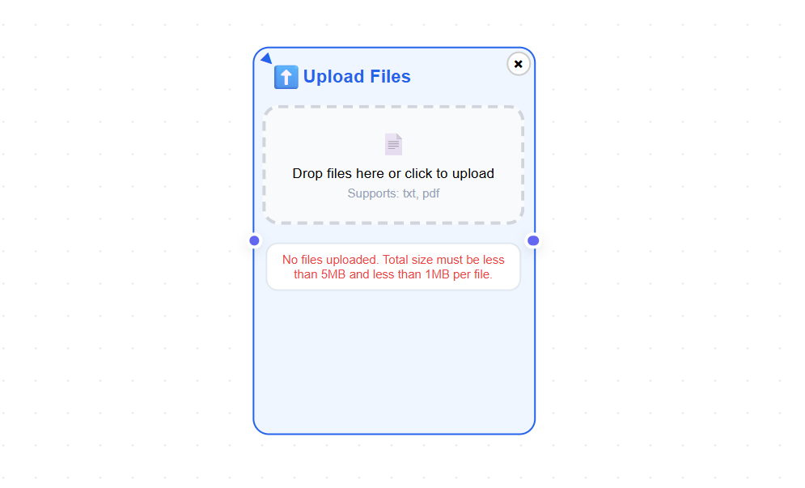
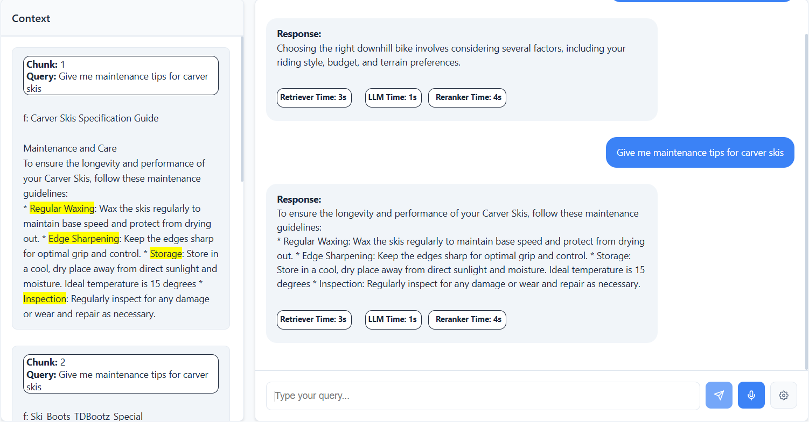
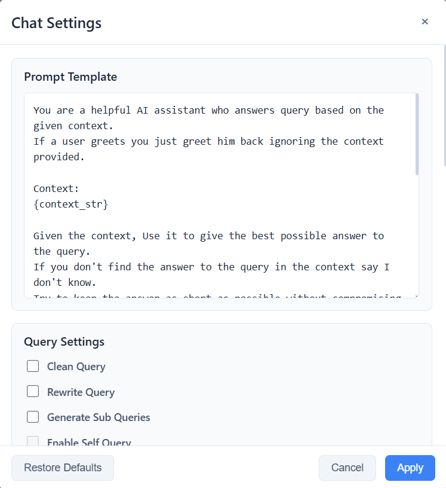

Product Features
Supports Multiple Document Types

- Supports text and pdf document types.
- Users can upload the documents from their local storage.
- Total size of documents should be less than 5MB.
- Individual document size must be less than 1MB.
Provides Document Content Viewer

- Enables a user to view the raw file content as well as the fonts in a PDF file.
- This enables the user to decide the chinking strategy to use.
- Aids in smart chunking strategy as per the document structure.
Supports Multiple Document Splitters

- Supports 5 splitters to chunk the documents.
- Supports custom splitters like Regex Splitter, PDF Font Splitter and Dummy Splitter.
- Multiple splitters can be applied to a document using the indexing pipeline.
Supports Vector Store Index

- Supports multiple sentence embedding models like Mixedbread AI's mxbai-embed-large-v1 and all-mpnet-base-v2.
- Enables a user to configure the embedding batch size.
- Supports vector stores like ChromaDB and Pinecone.
Provides Chunk Viewer

- Enables users to view the chunks before building an indexing pipeline.
- Enables users to compare multiple splitters and choose the best one for their documents.
- Enables users to apply multiple splitters to a document.
Provides Interactive QA Bot

- Chat with your documents by asking questions in the chatbot.
- The retrieved context will be shown on the left for the user to verify the correctness of the bot's response.
- Each indexing pipeline will have its own chatbot.
Customize Chat Settings

- User can configure chat settings for each indexing pipeline independently.
- User can configure LLM, temperature, retriever settings, hybrid search settings and re-ranking settings.
- User can restore the default chat settings provided by the application anytime.
Customize Model Prompt

- User can configure prompt template according to their documents and requirements.
- Users can configure the prompt template for each indexing pipeline independently.
- User can restore the default prompt template provided by the application anytime.
Review Pipeline Configuration
- Users can view the indexing pipeline configuration.
- Displays indexing pipeline configuration details like files ingested, splitters used and embedding settings.
- Viewing the files ingested improves the chat experience for the user enabling him to ask relevant questions.